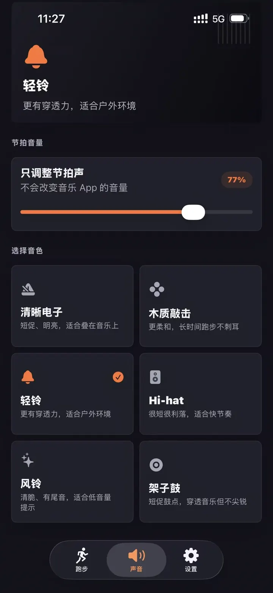
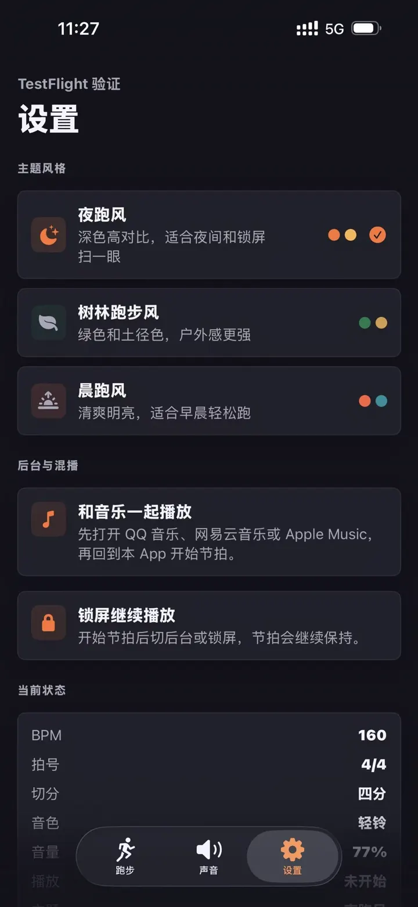
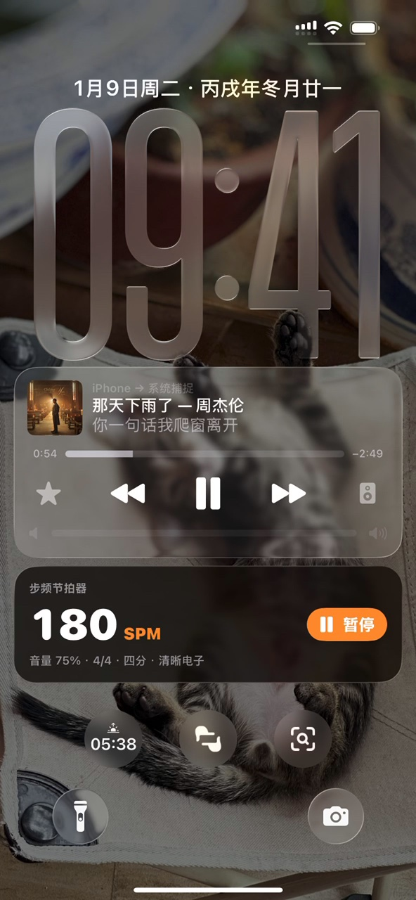

不想为了基础节拍付会员
很多节拍器把常用能力藏在会员后面，跑者只是想稳定步频，却先被付费墙打断。
01 - 初衷
很多节拍器把常用能力藏在会员后面，跑者只是想稳定步频，却先被付费墙打断。
训练节奏一旦被弹窗和广告切开，工具就从辅助变成干扰。
节拍声应该叠在音乐上，而不是抢走 QQ 音乐、网易云音乐或 Apple Music 的播放权。
02 - 核心体验
节拍器不接管系统音乐播放卡片，只把节拍声混在音乐上方。你可以保留自己的歌单，用独立音量把节拍调到刚好能听见的位置。


03 - 版本演进
1.0 先把跑步时最烦人的节拍器问题做轻：不打广告、不拦会员、不抢音乐。2.0 在这个基础上补上锁屏控制，让节拍器不用重新打开 App 也能暂停和继续。
第一版重点不是堆功能，而是让跑者能快速开始训练，并且保留自己的音乐习惯。
第二版把控制权延伸到锁屏，同时不抢音乐 App 的系统播放卡片。
音乐播放卡片和节拍器实时活动同屏显示：音乐归音乐，节拍器负责显示步频、音量和暂停/继续状态。

04 - Motion System
跑步中扫一眼就能确认当前步频，不需要在密集控件里找状态。
步频、音量、当前选中音色保持同一套强调色，训练时更容易形成肌肉记忆。
高对比但不刺眼，降低户外和夜间使用时的视觉负担。
锁屏时留在身边，手动退出时干净收尾。它不是音乐 App 的替代品，而是跑步时贴在音乐底下的一层节奏轨道。
交流这个项目